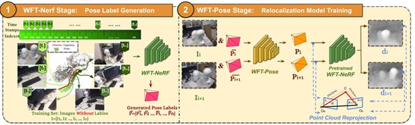
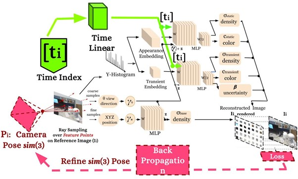
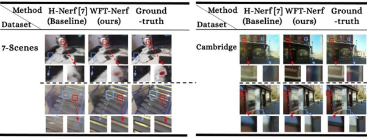
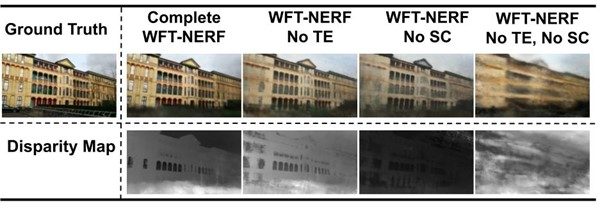

WSCLoc
WSCLoc: Weakly-Supervised Sparse-View Camera Relocalization via Radiance Field
IROS 2024 (Oral Presentation)


Abstract
Despite the advancements in deep learning for camera relocalization tasks, obtaining ground truth pose labels required for the training process remains a costly endeavor. While current weakly supervised methods excel in lightweight label generation, their performance notably declines in scenarios with sparse views. In response to this challenge, we introduce WSCLoc, a system capable of being customized to various deep learning-based relocalization models to enhance their performance under weakly-supervised and sparse view conditions. This is realized with two stages. In the initial stage, WSCLoc employs a multilayer perceptron-based structure called WFT-NeRF to co-optimize image reconstruction quality and initial pose information. To ensure a stable learning process, we incorporate temporal information as input. Furthermore, instead of optimizing SE(3), we opt for sim(3) optimization to explicitly enforce a scale constraint. In the second stage, we co-optimize the pre-trained WFT-NeRF and WFT-Pose. This optimization is enhanced by Time-Encoding based Random View Synthesis and supervised by inter-frame geometric constraints that consider pose, depth, and RGB information. We validate our approaches on two publicly available datasets, one outdoor and one indoor. Our experimental results demonstrate that our weakly-supervised relocalization solutions achieve superior pose estimation accuracy in sparse-view scenarios, comparable to state-of-the-art camera relocalization methods. We will make our code publicly available.
Supplementary Video
NeRF Rendering Performance

